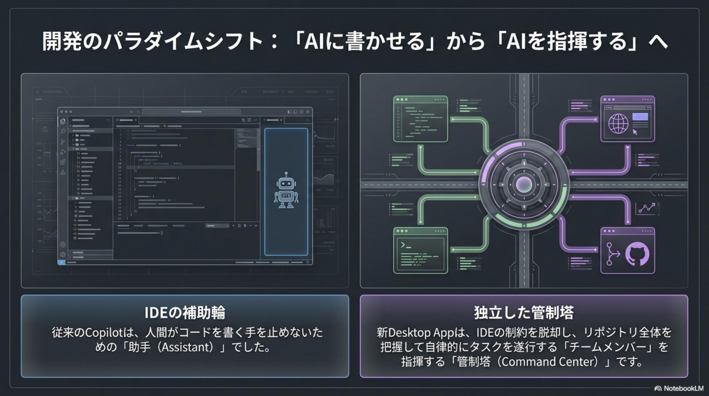
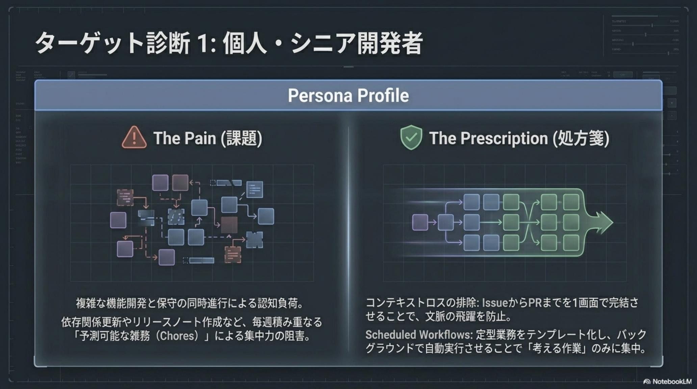
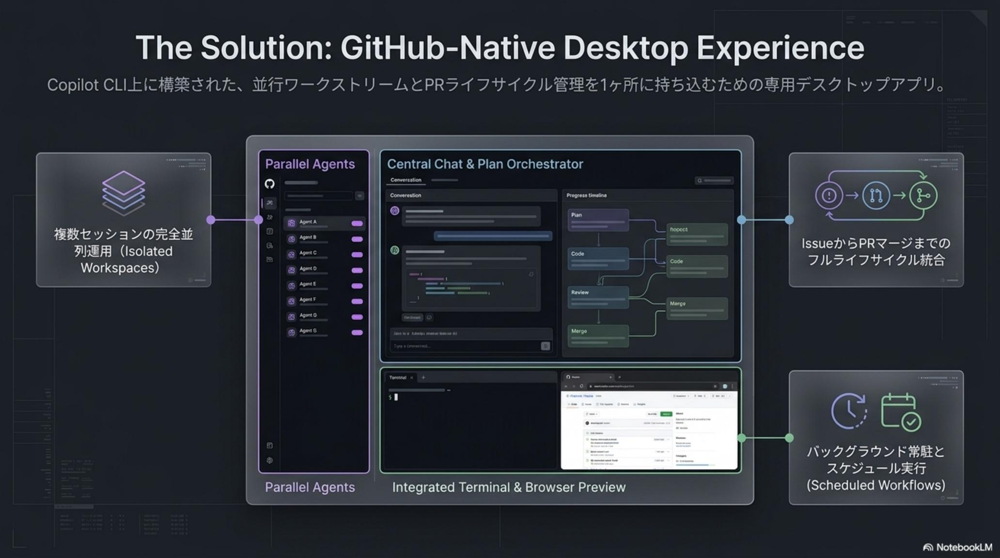
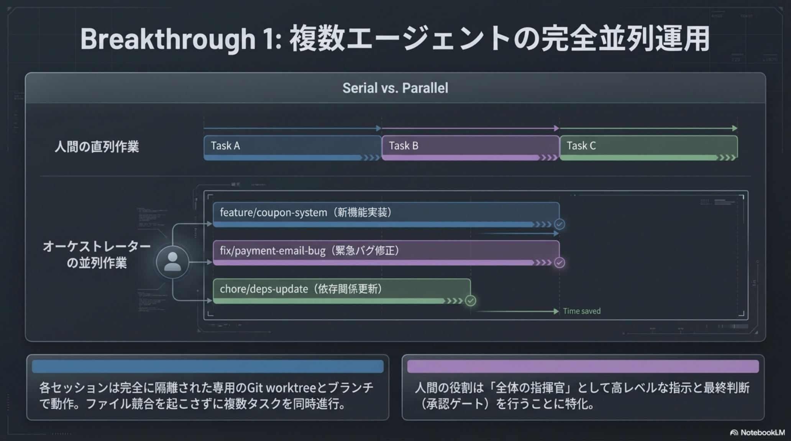
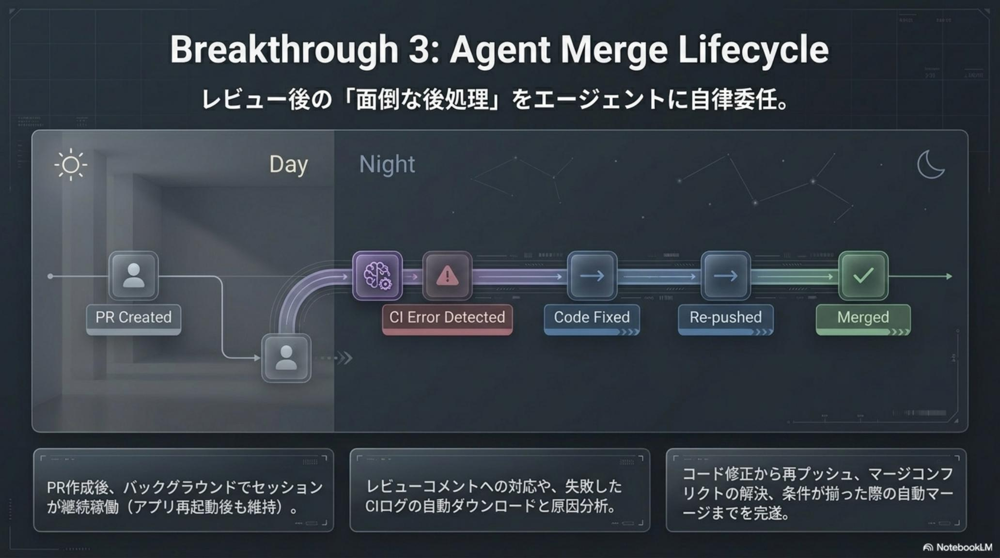
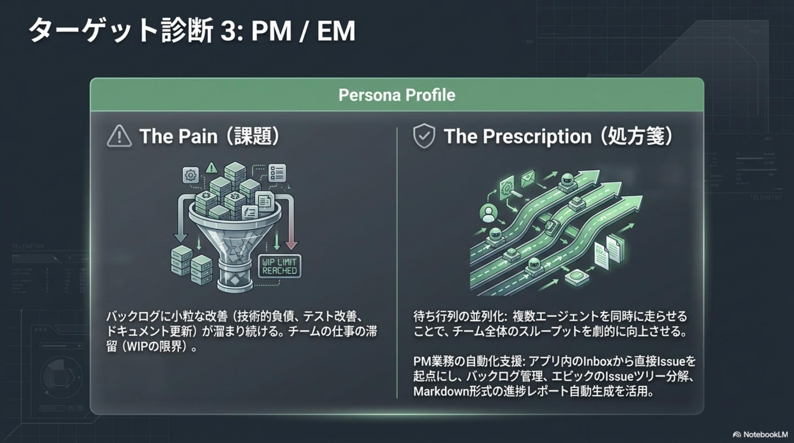
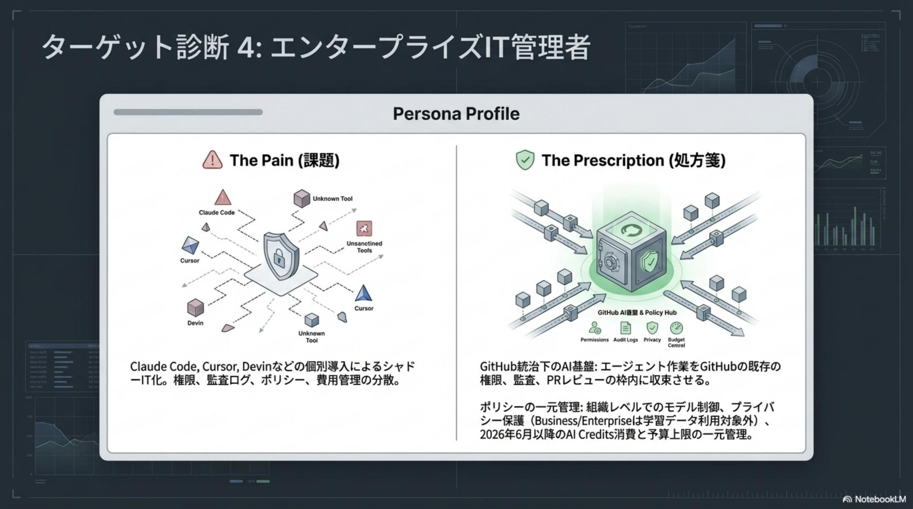
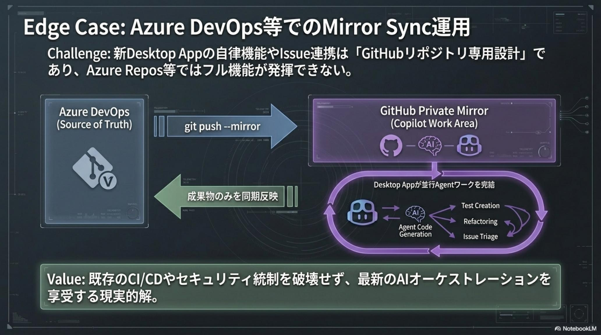
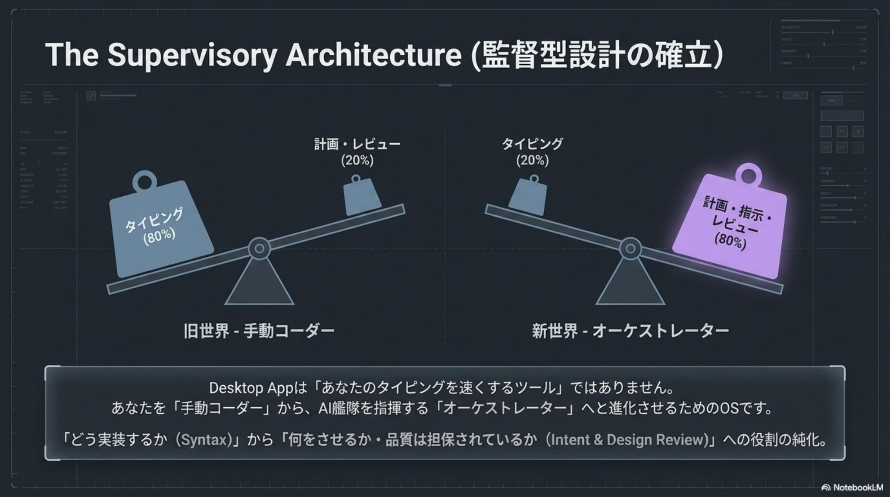
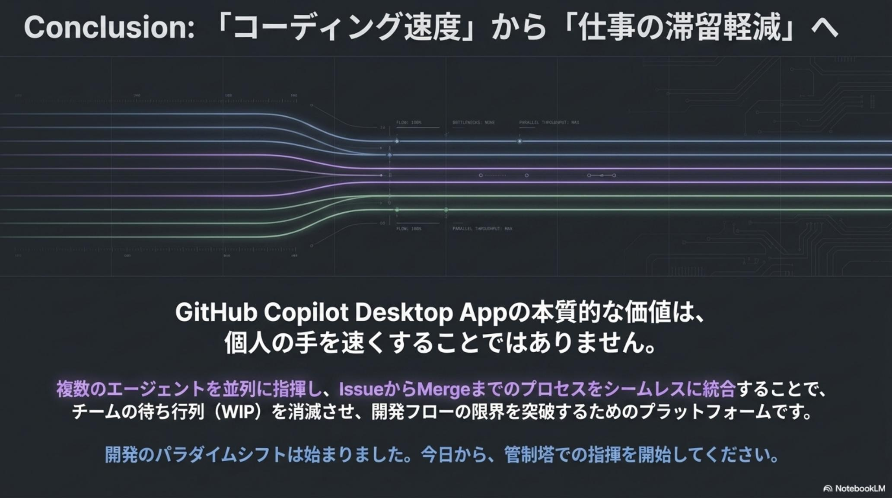

複雑機能と保守の同時進行による認知負荷
複雑なアーキテクチャ設計と、依存関係更新・リファクタ・定型バグ修正という毎週積み重なる予測可能な雑務（Chores）を並列で抱え、本来集中すべき設計判断の時間が刻まれていく。
GitHub Copilot Desktop App · Technical Preview · Issue № 05/18
関数補完を超え、Issue から PR マージまでをエージェントに丸ごとオーケストレーション。AI の役割は「コード入力を助ける助手」から、開発プロセス全体を完遂する自律型エージェントへ昇華した。エンジニアは「タイピスト」から「指揮官（オーケストレーター）」へ進化する。
Parallel Sessions × Agent Merge Lifecycle × Plan / Autopilot / Interactive の 3 動作モード × Git Worktree v0.2.5 隔離 × Azure DevOps Mirror Sync × 2026/6/1 開始の AI Credits。

これまでの AI は IDE 内での「インライン補完」に留まっていた。新 Desktop App はそれを開発ワークフローの管制塔（Command Center）へ昇華させる。作業の単位は関数・行レベルから Issue / PR 単位のライフサイクル管理へ拡張し、シニア開発者・テックリード・PM・エンタープライズ IT 管理者の 4 ペルソナそれぞれの苦悩を同時に解く。

プロダクト開発は 4 つの異なる立場の人間が連携して初めて前進する。だが従来の IDE 拡張型 AI は、それぞれに別々の痛みを残し続けた——その結果が、組織全体のスループットを縛る WIP（仕掛品）の滞留だった。
複雑なアーキテクチャ設計と、依存関係更新・リファクタ・定型バグ修正という毎週積み重なる予測可能な雑務（Chores）を並列で抱え、本来集中すべき設計判断の時間が刻まれていく。
AI 生成コードの品質統制と、PR レビューに伴う絶え間ないコンテキストスイッチ。レビューコメント修正・CI 失敗ログ解析・再 Push・マージコンフリクト解消が滞留すると、レビュー待ちが組織全体のスループットを縛る。
Slack の議論・議事録・口頭仕様を Issue ツリーに分解し、進捗を集めて週次レポートに編む。本来集中すべき意思決定の前に、一日が終わる。
Claude Code / Cursor / Devin など個別ツール乱立によるシャドー IT 化と、データ学習ポリシー・権限・監査ログ・費用管理の分散。Pro プラン個人利用者が混在するとオプトアウト徹底にリスクが残る。

新 Desktop App の発想は、IDE 拡張型 AI と一見似ているが、作業の単位が根本的に違う。Issue 起票 → 計画 → 実装 → テスト → レビュー対応 → マージまでを 1 つのネイティブ UI に統合し、複数 AI エージェントを並列で指揮する。
特筆すべきは Copilot CLI 基盤の上に並行ワークストリームと PR ライフサイクル管理を 1 ヶ所に集約 したアーキテクチャだ。gh extension install github/gh-copilot の 1 行で「管制塔」が起動し、エンジニアリングの焦点は「How（どう書くか）」から「What（何を達成するか）」へとシフトする。

自律性を支えるアーキテクチャの心臓部は、単一モデルの賢さではなく 3 動作モード × 隔離 Worktree × Agent Merge × Parallel Sessions の合わせ技にある。「透明性の高い部下」として AI を運用するための 4 本柱を解剖する。
複数 AI エージェントを独立した Git Worktree 上で並列稼働させ（Refactor / Bug Fix / Feature Dev 同時進行）、Plan モードで承認を取ってから走り、Autopilot で自律ループし、Interactive で人間と細部を詰める。Agent Merge は PR 作成後、CI 失敗ログを読み解析し、修正・再 Push までを Day から Night へ自走する。



エンタープライズ管理者にとっての本質的価値は、Claude Code / Cursor / Devin のシャドー IT 化を解消し、組織全体の AI 活動を GitHub の既存の権限・監査・PR レビューの枠内に収束させられる点にある。さらに Azure DevOps を Source of Truth に保ったままでも導入できる Mirror Sync 戦略が用意されている。
組織レベルでのモデル制御、プライバシー保護（Business / Enterprise は学習データ利用対象外）、2026 年 6 月 1 日以降の AI Credits 消費と予算上限の一元管理が可能になる。月間 800 回以上のプレミアムリクエストが発生するチームでは Enterprise プランへの集約が最も費用対効果が高い。
git push --mirror で GitHub Private Mirror に同期、Desktop App が並行 Agent ワーク完結、成果物のみ Azure へ反映
アーキテクトのセキュリティノート：Mirror Sync は Azure Repos を「正」としつつ GitHub を「エージェントの実行エンジン」として活用する最強のハイブリッド構成だ。Azure → GitHub（一方向）の自動同期パイプラインを構築し、完了後に Azure へ Push バックすることで、既存の CI/CD やセキュリティ統制を破壊せず最新の AI オーケストレーションを享受できる。

技術プレビュー段階での早期着手こそが、次世代の競争力を決定する。組織のポリシーとして「まず計画を見せて」の Plan-First 原則を採用し、雑務の委譲から段階的にスループット向上を実感していく。
gh extension install github/gh-copilot で「管制塔」を起動。既存の GitHub CLI 設定をそのまま継承。
Worktree ベースの Plan モードで最小 10 タスクを委譲。「まず実装計画（タスク一覧）を立てて見せて」と指示し、PM は承認してから安全に Issue 化を指示する。
依存関係更新・ドキュメント整備・定型バグ修正など、信頼性の高い定型タスクから順次エージェントに委ね、Agent Merge と組み合わせて夜間も走らせる。
PR 作成後、レビューコメントへの修正・CI 失敗時のログダウンロード・原因分析・再 Push まで Agent Merge が自律遂行。人間は最終承認に専念する。

本アプリが告げるのは、「いかに書くか（Syntax）」から「何を達成するか（Intent）」へというエンジニアリングの焦点シフトだ。エンジニアに求められるのは細かな文法の暗記ではなく、AI エージェントに明確な目的を与え、その成果を監査する「監督能力」である。
開発の単位を「ファイル編集」から「タスク・オーケストレーション」へ変貌させることで、エンジニアは AI 開発チームの指揮官として、待ち行列のないスムーズな開発フローを維持する役割に進化する。Issue 起票・計画・実装・テスト・レビュー対応・マージ——その全工程を、複数エージェントを並列で指揮しながら完遂する時代の到来である。
gh extension install）と Worktree ポリシー策定
新 Desktop App は単なる「速い AI ツール」ではなく、組織のスループット構造の組み替えだ。立場ごとに最初の一歩は変わる。
Refactor / Bug Fix / Feature Dev を独立 Worktree で並列稼働させ、Scheduled Workflows で定型業務をテンプレ化。シニアは「考える作業」のみに集中し、高付加価値業務への集中時間を最大化する。
Agent Merge を有効化し、レビュー指摘対応・CI 失敗の解析と修正・マージコンフリクト解消を夜間バックグラウンドで自走させる。人間は Human-in-the-loop の最終承認に専念する。
曖昧な要件から「エピック 1 + フィーチャー 3 + タスク 10 程度」の Issue ツリーを自動生成。リポジトリ進捗を読み取った週次 Markdown レポートで「どこまで進んだ？」の問い合わせを構造解消する。
個人プランのオプトアウト証跡を確認し、法人プランへの集約を進める。信頼できるディレクトリでエージェント実行範囲を限定し、AI Credits の Budget Limits で組織全体のコスト統制を確立する。
エンジニアに求められるのは、文法の暗記ではない——AI エージェントに明確な目的を与え、その成果を監査する 「監督能力」 だ。— GitHub Copilot Desktop App / Technical Preview 公式資料 · 2026-05-18